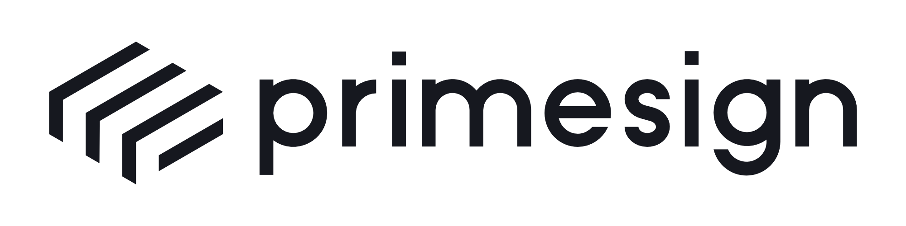

PrimeSign GmbH

PrimeSign GmbH is a leading provider of products, services, and solutions related to electronic signatures. With more than 20 years of experience, PrimeSign focuses on the digitalization and optimization of signature processes. PrimeSign is a qualified trust service provider (eIDAS-compliant) and also the manufacturer and operator of (qualified) remote signature systems and signature applications. Thus, PrimeSign brings unique, extensive, and long-standing experience to the piloting and evaluation of a post-quantum secure signature service in the project. Additionally, as a trust service provider, PrimeSign is obligated to address the risk of weakening signature algorithms in a timely manner and to prepare suitable alternatives.
For this reason, PrimeSign not only acts as a project partner in this endeavor, working on and developing alternative approaches for a post-quantum era, but also serves as a private-sector stakeholder. Supervised eIDAS trust service providers, such as PrimeSign, have an increased demand and interest in this area. Therefore, the piloting of the project's results based on PrimeSign's existing eIDAS-VDA infrastructure/technologies is a key contribution and strength of the project to ensure the practical viability of the outcomes.